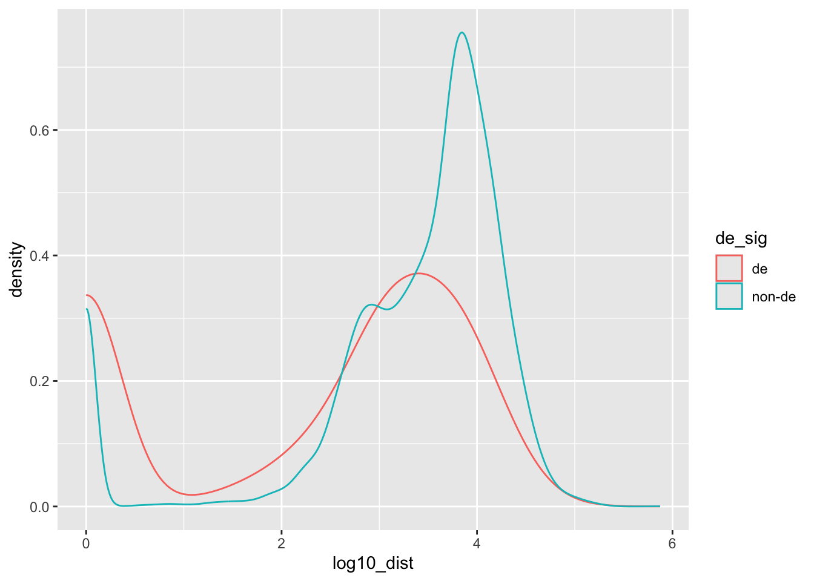

dir <- system.file("extdata", package="macrophage")
library(tximeta)
makeLinkedTxome(
indexDir=file.path(dir, "gencode.v29_salmon_0.12.0"),
source="Gencode",
organism="Homo sapiens",
release="29",
genome="GRCh38",
fasta="ftp://ftp.ebi.ac.uk/pub/databases/gencode/Gencode_human/release_29/gencode.v29.transcripts.fa.gz",
gtf=file.path(dir, "gencode.v29.annotation.gtf.gz"), # local version
write=FALSE
)Differential chromatin accessibility and gene expression
Differential expression from RNA-seq
dir <- system.file("extdata", package="macrophage")
library(dplyr)
Attaching package: 'dplyr'The following object is masked from 'package:testthat':
matchesThe following objects are masked from 'package:stats':
filter, lagThe following objects are masked from 'package:base':
intersect, setdiff, setequal, unionlibrary(readr)
Attaching package: 'readr'The following objects are masked from 'package:testthat':
edition_get, local_editioncolfile <- file.path(dir, "coldata.csv")
coldata <- read_csv(colfile) |>
dplyr::select(
names,
id = sample_id,
line = line_id,
condition = condition_name
) |>
dplyr::mutate(
files = file.path(dir, "quants", names, "quant.sf.gz"),
line = factor(line),
condition = relevel(factor(condition), "naive")
)Rows: 24 Columns: 13── Column specification ────────────────────────────────────────────────────────────────────────────
Delimiter: ","
chr (10): names, sample_id, line_id, condition_name, macrophage_harvest, salmonella_date, rna_ex...
dbl (3): replicate, ng_ul_mean, rna_auto
ℹ Use `spec()` to retrieve the full column specification for this data.
ℹ Specify the column types or set `show_col_types = FALSE` to quiet this message.coldata# A tibble: 24 × 5
names id line condition files
<chr> <chr> <fct> <fct> <chr>
1 SAMEA103885102 diku_A diku_1 naive /Library/Frameworks/R.framework/Versions/4.4-arm64/Reso…
2 SAMEA103885347 diku_B diku_1 IFNg /Library/Frameworks/R.framework/Versions/4.4-arm64/Reso…
3 SAMEA103885043 diku_C diku_1 SL1344 /Library/Frameworks/R.framework/Versions/4.4-arm64/Reso…
4 SAMEA103885392 diku_D diku_1 IFNg_SL1344 /Library/Frameworks/R.framework/Versions/4.4-arm64/Reso…
5 SAMEA103885182 eiwy_A eiwy_1 naive /Library/Frameworks/R.framework/Versions/4.4-arm64/Reso…
6 SAMEA103885136 eiwy_B eiwy_1 IFNg /Library/Frameworks/R.framework/Versions/4.4-arm64/Reso…
7 SAMEA103885413 eiwy_C eiwy_1 SL1344 /Library/Frameworks/R.framework/Versions/4.4-arm64/Reso…
8 SAMEA103884967 eiwy_D eiwy_1 IFNg_SL1344 /Library/Frameworks/R.framework/Versions/4.4-arm64/Reso…
9 SAMEA103885368 fikt_A fikt_3 naive /Library/Frameworks/R.framework/Versions/4.4-arm64/Reso…
10 SAMEA103885218 fikt_B fikt_3 IFNg /Library/Frameworks/R.framework/Versions/4.4-arm64/Reso…
# ℹ 14 more rowslibrary(SummarizedExperiment)Loading required package: MatrixGenericsLoading required package: matrixStats
Attaching package: 'matrixStats'The following object is masked from 'package:dplyr':
count
Attaching package: 'MatrixGenerics'The following objects are masked from 'package:matrixStats':
colAlls, colAnyNAs, colAnys, colAvgsPerRowSet, colCollapse, colCounts, colCummaxs,
colCummins, colCumprods, colCumsums, colDiffs, colIQRDiffs, colIQRs, colLogSumExps,
colMadDiffs, colMads, colMaxs, colMeans2, colMedians, colMins, colOrderStats,
colProds, colQuantiles, colRanges, colRanks, colSdDiffs, colSds, colSums2,
colTabulates, colVarDiffs, colVars, colWeightedMads, colWeightedMeans,
colWeightedMedians, colWeightedSds, colWeightedVars, rowAlls, rowAnyNAs, rowAnys,
rowAvgsPerColSet, rowCollapse, rowCounts, rowCummaxs, rowCummins, rowCumprods,
rowCumsums, rowDiffs, rowIQRDiffs, rowIQRs, rowLogSumExps, rowMadDiffs, rowMads,
rowMaxs, rowMeans2, rowMedians, rowMins, rowOrderStats, rowProds, rowQuantiles,
rowRanges, rowRanks, rowSdDiffs, rowSds, rowSums2, rowTabulates, rowVarDiffs,
rowVars, rowWeightedMads, rowWeightedMeans, rowWeightedMedians, rowWeightedSds,
rowWeightedVarsLoading required package: GenomicRangesLoading required package: stats4Loading required package: BiocGenerics
Attaching package: 'BiocGenerics'The following objects are masked from 'package:dplyr':
combine, intersect, setdiff, unionThe following objects are masked from 'package:stats':
IQR, mad, sd, var, xtabsThe following objects are masked from 'package:base':
anyDuplicated, aperm, append, as.data.frame, basename, cbind, colnames, dirname,
do.call, duplicated, eval, evalq, Filter, Find, get, grep, grepl, intersect,
is.unsorted, lapply, Map, mapply, match, mget, order, paste, pmax, pmax.int, pmin,
pmin.int, Position, rank, rbind, Reduce, rownames, sapply, setdiff, table, tapply,
union, unique, unsplit, which.max, which.minLoading required package: S4Vectors
Attaching package: 'S4Vectors'The following objects are masked from 'package:dplyr':
first, renameThe following object is masked from 'package:utils':
findMatchesThe following objects are masked from 'package:base':
expand.grid, I, unnameLoading required package: IRanges
Attaching package: 'IRanges'The following objects are masked from 'package:dplyr':
collapse, desc, sliceLoading required package: GenomeInfoDbLoading required package: BiobaseWelcome to Bioconductor
Vignettes contain introductory material; view with 'browseVignettes()'. To cite
Bioconductor, see 'citation("Biobase")', and for packages 'citation("pkgname")'.
Attaching package: 'Biobase'The following object is masked from 'package:MatrixGenerics':
rowMediansThe following objects are masked from 'package:matrixStats':
anyMissing, rowMedianslibrary(tximeta)
se <- tximeta(coldata, dropInfReps=TRUE, useHub=FALSE, skipSeqinfo=TRUE)importing quantificationsreading in files with read_tsv1 2 3 4 5 6 7 8 9 10 11 12 13 14 15 16 17 18 19 20 21 22 23 24
found matching linked transcriptome:
[ GENCODE - Homo sapiens - release 29 ]
loading existing TxDb created: 2022-02-09 23:19:12
Loading required package: GenomicFeatures
Loading required package: AnnotationDbi
Attaching package: 'AnnotationDbi'
The following object is masked from 'package:dplyr':
select
loading existing transcript ranges created: 2022-02-09 23:19:13gse <- summarizeToGene(se, assignRanges="abundant")loading existing TxDb created: 2022-02-09 23:19:12obtaining transcript-to-gene mapping from databaseloading existing gene ranges created: 2022-02-09 23:20:02gene ranges assigned by isoform abundance, see `assignRanges`summarizing abundancesummarizing countssummarizing lengthlibrary(DESeq2)
dds <- DESeqDataSet(gse, ~line + condition)using counts and average transcript lengths from tximetadds <- dds[,dds$condition %in% c("naive","IFNg")]
dds$condition <- droplevels(dds$condition)
dds$condition <- relevel(dds$condition, "naive")
keep <- rowSums(counts(dds) >= 10) >= 6
dds <- dds[keep,]The model is fit with the following line of code:
dds <- DESeq(dds)estimating size factorsusing 'avgTxLength' from assays(dds), correcting for library sizeestimating dispersionsgene-wise dispersion estimatesmean-dispersion relationshipfinal dispersion estimatesfitting model and testingres <- results(dds, lfcThreshold=1)
summary(res)
out of 16086 with nonzero total read count
adjusted p-value < 0.1
LFC > 1.00 (up) : 793, 4.9%
LFC < -1.00 (down) : 523, 3.3%
outliers [1] : 0, 0%
low counts [2] : 0, 0%
(mean count < 7)
[1] see 'cooksCutoff' argument of ?results
[2] see 'independentFiltering' argument of ?resultsTo see the results of the expression analysis, we can generate a summary table and an MA plot:
DESeq2::plotMA(res, ylim=c(-10,10))library(plyranges)
Attaching package: 'plyranges'The following object is masked from 'package:AnnotationDbi':
selectThe following object is masked from 'package:IRanges':
sliceThe following objects are masked from 'package:dplyr':
between, n, n_distinctThe following object is masked from 'package:stats':
filterall_genes <- results(dds, lfcThreshold=1, format="GRanges") |>
names_to_column("gene_id") |>
select(gene_id, de_log2FC = log2FoldChange, de_padj = padj, de_pval = pvalue)
genome(all_genes) <- "hg38"
si <- Seqinfo(genome="hg38")
#save(Seqinfo, file="seqinfo.rda")
load("seqinfo.rda")
si <- keepStandardChromosomes(si)
seqinfo(all_genes) <- siDifferential accessibility from ATAC-seq
The following section describes the process we have used for generating a GRanges object of differential peaks from the ATAC-seq data in @alasoo. The code chunks for the remainder of this section are not run. For assessing differential accessibility, we followed the original paper, using limma [@Smyth2004], and generating a summary of LFCs and adjusted p-values for the peaks.
library(fluentGenomics)
# atac <- readRDS(cache_atac_se())
library(limma)
design <- model.matrix(~donor + condition, colData(atac))
fit <- lmFit(assay(atac), design)
fit <- eBayes(fit)
idx <- which(colnames(fit$coefficients) == "conditionIFNg")
tt <- topTable(fit, coef=idx, sort.by="none", n=nrow(atac))
atac_peaks <- rowRanges(atac) |>
remove_names() |>
mutate(
da_log2FC = tt$logFC,
da_padj = tt$adj.P.Val
) |>
set_genome_info(genome = "hg38")
seqlevelsStyle(atac_peaks) <- "UCSC"The final GRanges object containing the DA peaks is included in the workflow package and can be loaded as follows:
library(fluentGenomics)
peaksGRanges object with 296220 ranges and 3 metadata columns:
seqnames ranges strand | peak_id da_log2FC da_padj
<Rle> <IRanges> <Rle> | <character> <numeric> <numeric>
[1] chr1 9979-10668 * | ATAC_peak_1 0.266185 9.10673e-05
[2] chr1 10939-11473 * | ATAC_peak_2 0.322177 2.03435e-05
[3] chr1 15505-15729 * | ATAC_peak_3 -0.574160 3.41708e-08
[4] chr1 21148-21481 * | ATAC_peak_4 -1.147066 8.22299e-26
[5] chr1 21864-22067 * | ATAC_peak_5 -0.896143 4.79453e-11
... ... ... ... . ... ... ...
[296216] chrX 155896572-155896835 * | ATAC_peak_296216 -0.834629 1.33546e-11
[296217] chrX 155958507-155958646 * | ATAC_peak_296217 -0.147537 3.13015e-01
[296218] chrX 156016760-156016975 * | ATAC_peak_296218 -0.609732 3.62339e-09
[296219] chrX 156028551-156029422 * | ATAC_peak_296219 -0.347678 6.94823e-06
[296220] chrX 156030135-156030785 * | ATAC_peak_296220 0.492442 7.07664e-13
-------
seqinfo: 23 sequences from hg38 genome; no seqlengthsseqlevels(peaks) <- seqlevels(si)
seqinfo(peaks) <- siIntegration of RNA-seq and ATAC-seq differential results
da_peaks <- peaks |>
filter(da_padj < .01, abs(da_log2FC) > .5)
tss_by_de <- all_genes |>
mutate(de_sig =
case_when(
de_padj <= .01 ~ "de",
TRUE ~ "non-de"
)) |>
filter(!dplyr::between(de_padj, .01, .99)) |>
anchor_5p() |>
mutate(width=1)
dist_res <- tss_by_de |>
add_nearest_distance(da_peaks)
dist_res_clean <- dist_res |>
as_tibble() |>
tidyr::drop_na()
dist_res_clean |>
group_by(de_sig) |>
summarize(mean = mean(distance), sd = sd(distance))# A tibble: 2 × 3
de_sig mean sd
<chr> <dbl> <dbl>
1 de 3173. 5927.
2 non-de 7705. 13266.library(ggplot2)
dist_res_clean |>
filter(distance < 1e6) |>
mutate(log10_dist = log10(distance + 1)) |>
ggplot(aes(log10_dist, color=de_sig)) +
geom_density()
dist_res %>%
mutate(near_peaks = count_overlaps(., da_peaks, maxgap=100)) |>
as_tibble() |>
dplyr::count(de_sig, near_peaks)# A tibble: 6 × 3
de_sig near_peaks n
<chr> <int> <int>
1 de 0 664
2 de 1 338
3 de 2 4
4 non-de 0 12840
5 non-de 1 1280
6 non-de 2 28library(nullranges)
da_peaks_chr <- da_peaks |>
dropSeqlevels(c("chrY","chrM")) |>
sort()
set.seed(1)
boot <- bootRanges(da_peaks_chr, blockLength=1e6, R=5)all_peaks <- bind_ranges(
da_peaks %>% mutate(iter=0),
boot
)
tss_by_de |>
join_overlap_inner(all_peaks, maxgap=100) |>
as_tibble() |>
select(gene_id, peak_id, de_sig, iter) |>
group_by(de_sig, iter) |>
summarize(overlaps_any = n_distinct(gene_id))`summarise()` has grouped output by 'de_sig'. You can override using the `.groups` argument.# A tibble: 12 × 3
# Groups: de_sig [2]
de_sig iter overlaps_any
<chr> <fct> <int>
1 de 0 342
2 de 1 33
3 de 2 24
4 de 3 20
5 de 4 19
6 de 5 33
7 non-de 0 1308
8 non-de 1 407
9 non-de 2 390
10 non-de 3 369
11 non-de 4 373
12 non-de 5 378